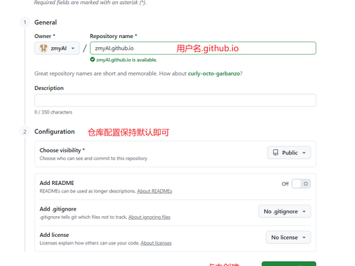
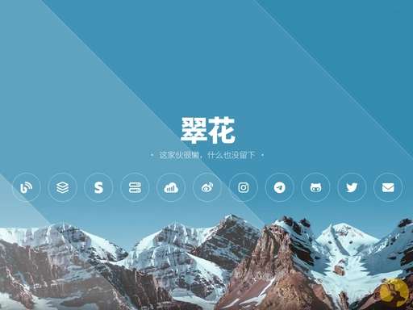

我的网站：https://chears77.github.io/
一、选择github的主页设置
GitHub Pages 搭建个人主页完整手把手教程（你已登录 GitHub，从首页开始操作）
第一步：创建专属网站仓库（最关键，名字不能错）

-
页面右上角，点 + 下拉箭头 → New repository（新建仓库）
-
仓库名称严格填写：你的 GitHub 用户名.github.io
-
举例：你 GitHub 账号叫
lisi123，仓库名必须是lisi123.github.io，一字不差、大小写匹配
-
-
配置选项：
-
Visibility（可见性）：选 Public（公开）（私有仓库免费版不能开 Pages）
-
Add a README file：可以勾选（方便备注）
-
Add .gitignore/ License：全部选 None 不用管
-
-
点击最下方 Create repository创建仓库
第二步：上传首页文件 index.html（两种方法，新手推荐网页上传）
方式 1：网页直接创建文件（不用装 Git 软件，零门槛）
-
进入刚建好的
xxx.github.io仓库主页 -
点击绿色按钮 Add file → Create new file
-
文件名输入：index.html（必须叫这个，网站默认打开它）
-
下方大编辑框粘贴下面基础测试代码：
<!DOCTYPE html>
<html lang="zh-CN">
<head>
<meta charset="UTF-8">
<meta name="viewport" content="width=device-width, initial-scale=1.0">
<title>我的个人主页</title>
<style>
body{text-align:center;margin-top:100px;font-family:微软雅黑;}
</style>
</head>
<body>
<h1>欢迎来到我的个人主页</h1>
<p>这是用GitHub Pages免费搭建的网站</p>
</body>
</html>
-
滑到最底部，Commit changes（提交），直接点 Commit new file保存文件
方式 2：本地写好文件批量上传（适合后续多文件：css、图片、js）
-
本地电脑建好文件夹，里面放
index.html、样式 css、图片等所有网页素材 -
仓库页面点 Add file → Upload files
-
把本地文件夹里全部文件拖进上传框，底部提交保存
第三步：开启 GitHub Pages 部署功能
-
在仓库顶部导航栏，点击 Settings（设置）
-
左侧菜单栏往下滑，找到 Pages点开配置页
-
Build and deployment（部署来源）设置：
-
Source 选择：Deploy from a branch
-
Branch（分支）：选 main
-
Folder（文件夹）：选 /(root) 根目录
-
-
点击蓝色 Save保存配置
第四步：访问你的个人网站
-
保存后等待 1–3 分钟（GitHub 后台打包部署）
-
浏览器打开地址：
https://你的用户名.github.io -
刷新页面就能看到你写的 index.html 内容；如果 404，多等一会再刷新
五、后续美化 & 更新网站
-
修改页面内容
-
网页端：点开 index.html，点铅笔编辑图标，改完提交
-
熟练后可以装 Git，本地改完一键推送更新
-
-
套好看模板（不用手写 HTML） 网上搜 GitHub Pages 免费模板（Jekyll 模板、静态 HTML 模板），下载全部文件替换仓库里的文件，重新提交即可一键换皮肤
-
区分两个 “主页” 别搞混
-
-
xxx.github.io是独立网站（浏览器打开的完整网页站点）
-
-
-
和用户名同名仓库的 README，是你 GitHub 账号头像下面的简介卡片（只是资料展示，不是独立网址网站）
-
-
-
常见踩坑提醒
-
仓库名字写错、少
.github.io→ 网站无法生成 -
文件不叫 index.html、放在子文件夹里 → 打开 404 空白
-
仓库设为 Private 私有 → Pages 功能直接不可用
-
刚保存配置立刻访问大概率 404，一定要等几分钟部署完成
我的主页：https://chears77.github.io/
二、选择模板
（一）纯静态 HTML 模板（新手首选，零框架，直接上传即用）
1. Nange 楠格（极简风景背景，小白友好）
源码：https://github.com/XOS/Nange预览：https://home.nange.cn

特点：只改配置文件填名字、社交链接、头像，不用碰复杂代码；适配手机电脑，B 站 / GitHub / 微信等图标齐全。
2. Simplefolio（程序员极简作品集，全球高星）
源码：https://github.com/cobidev/simplefolio预览：https://simplefolio.co特点：深色浅色双模式、技能栏、项目卡片、工作经历时间轴，求职简历向主页标杆。
3. Dev Landing Page（代码风程序员主页）
源码：https://github.com/denniswanger/dev-landing-page特点：9 套主题配色，轻量无冗余，专注展示项目与联系方式。
4. 迪外狄（科技代码动效简历页）
源码：https://github.com/viivm/dev-resume
特点：Anime.js 流畅动效、深浅切换、多语言，仅 6 个小文件，加载飞快。
5. Tomotoes HomePage（炫酷加载动画个性款）
源码：https://github.com/Tomotoes/HomePage预览：https://tomotoes.com特点：科幻片头加载动画，视觉辨识度极高；适合想做独特风格的人。
（二）Jekyll 主题模板（带博客、文章、CV 功能，GitHub 原生支持）
1. Minimal Mistakes（万能通用主题，最火）
源码：https://github.com/mmistakes/minimal-mistakes适用：个人主页 + 博客 + 作品集，文档极全，自定义自由度拉满。
2. Academic Pages（学术 / 简历专用）
源码：https://github.com/academicpages/academicpages.github.io
适合：学生、研究员、需要论文 / 教学经历展示的人群。
3. al-folio（高端学术风）
源码：https://github.com/alshedivat/al-folioMIT/CMU 大量学者在用，自动导入论文 BibTeX、生成完整 CV。
（三）大型模板合集仓库（海量模板随便挑）
-
awesome-github-pages-portfolios（合集大全）https://github.com/lyndseybrowning/awesome-github-pages-portfolios收集上百套可直接部署的 GitHub Pages 个人站，分极简、程序员、设计师、学术分类。
-
HTML5 UP（免费商用静态模板站）官网：https://html5up.net/几十套高质量响应式 HTML 模板，下载解压替换到你的
.github.io仓库即可，完全免费可商用。
（四）二次元 / 个性小众风格
-
kaygb 二次元清新主页 https://github.com/kaygb/kaygb
-
EsunR 博客索引主页（带文章列表） https://github.com/EsunR/Blog-Index
（五）新手最快套用步骤（拿 Nange 举例）
-
打开模板 GitHub 地址 → 点击右上角 Fork
-
Fork 后的仓库名字改成你的用户名.github.io
-
进入仓库 Settings → Pages，分支选 main、根目录保存
-
打开仓库里的
config.js，把姓名、头像、社交链接全部替换成你自己的 -
等待 2 分钟，访问
你的用户名.github.io直接上线
我最终选择了几个模板，见本地文件夹
三、本次搭建个人网页全过程总结 & 所有踩坑点避雷清单
（一）搭建流程回顾
-
新建专属仓库
用户名.github.io，设为 Public 公开 -
下载静态 HTML 模板 MeFamily，本地解压
-
因网页单次上传文件超 100 个报错，改用 zip 压缩包上传仓库
-
打开 Codespaces 云编辑器，终端执行
unzip web.zip解压模板，覆盖原有index.html -
提交解压后的全部文件，仓库根目录出现完整网站资源
-
仓库 Settings 开启 GitHub Pages，分支 main、根目录部署，成功访问网站
-
尝试本地 Git 同步：克隆仓库→本地修改 index→git 提交推送，遇到网络、登录、命令输入多重问题
（二）全程踩坑点 + 对应避雷方案
1. 网页上传文件数量限制坑
-
踩坑：一次性拖拽全部模板文件，提示文件超过 100 个无法上传
-
避雷： 方案 A（网页直传）：分两批上传，先传 assets、forms 文件夹，再传所有 html 文件；方案 B（压缩包）：打包 zip 上传，用 Codespaces 终端命令解压，适合文件量大的模板。
2. 压缩包解压目录错误坑
-
潜在大坑：打包时把外层
MeFamily文件夹一起打包，解压后所有文件嵌套在子文件夹里，访问网站 404 -
避雷：打包前进入 MeFamily 内部，全选里面所有文件 / 文件夹再压缩，保证解压后
index.html直接在仓库根目录。
3. Codespaces 右键无解压按钮坑
-
踩坑：新版界面移除右键解压选项，找不到解压入口
-
避雷：直接用终端命令
unzip web.zip，一键解压，出现覆盖提示输入A全部替换。
4. Git 克隆网络中断坑
-
踩坑：
git clone直连 GitHub 报 Connection was reset 连接重置 -
避雷：克隆地址前加国内加速代理前缀；切换手机热点重试；嫌麻烦直接用网页上传，不用 Git 克隆。
5. 复制命令带乱码特殊符号报错
-
踩坑：复制教程里带
$、^[[200~标记的整行内容，粘贴后系统识别不到 git 命令 -
避雷：只复制纯命令文字，手动输入或单独复制指令，不要连带行号、提示符一起粘贴。
6. GitHub 令牌找不到入口坑
-
踩坑：点开仓库的 Settings，翻到底也没有 Developer settings
-
避雷：必须点右上角个人头像下拉框的 Settings（个人全局设置），不是仓库设置；可直接打开直达链接
https://github.com/settings/tokens。
7. Git 推送登录超时警告
-
踩坑：git push 出现凭证自动探测超时 warning 弹窗，登录卡顿
-
避雷：执行配置命令固定登录模式消除警告；长期使用提前生成 classic 令牌，密码栏粘贴令牌而非账号密码。
8. Everything up-to-date 推送无更新坑
-
踩坑：本地改完文件直接 git push，提示全部已是最新，线上无变化
-
避雷：修改文件后必须完整执行三步：
git add .→git commit -m "修改备注"→git push；缺少 add/commit 不会生成新提交，自然无法上传。
9. Pages 部署基础规则坑
-
隐性风险：仓库私有、仓库名写错、index.html 不在根目录，打开网址 404 空白
-
避雷：仓库名严格为
用户名.github.io、必须 Public、网站首页文件放在仓库第一层，不嵌套文件夹。
四、后续两种网页更新操作流程（按需选择，以后直接照着做）
方案 A：少量修改，零 Git 命令（小白首选，无任何坑）
适合：只改文字、单张图片、偶尔更新
-
本地修改好
index.html/ 图片 /css 文件 -
打开 GitHub 仓库页面 → Add file → Upload files
-
只拖拽你修改过的那几个文件，不用全传
-
底部填写修改备注，点击 Commit changes 覆盖线上文件
-
等待 2~5 分钟，刷新
https://chears77.github.io查看更新
方案 B：大量修改 / 频繁更新，本地 Git 同步（适合长期维护）
首次前置（仅做一次）
-
使用加速链接克隆完整仓库到本地电脑
-
配置全局用户名、邮箱，生成 GitHub 令牌用于登录
-
执行命令消除凭证超时警告
每次更新标准固定三步（改完文件后执行）
-
打开本地仓库文件夹，空白处右键 Git Bash Here
-
标记所有改动文件
git add .
-
填写本次修改说明，生成本地提交
git commit -m "更换模板2"
-
同步推送至 GitHub 线上仓库
git push
-
等待几分钟，刷新个人网站查看效果
补充同步指令
如果你在 GitHub 网页手动改了内容，本地文件落后，执行这条拉取线上最新文件：
git pull
同步命令简化
git add . git commit -m "更新了1" git push